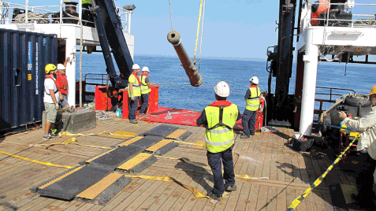

La crisis del coronavirus
 Datos actualizados
Datos actualizados
Sánchez ficha a 100 economistas de élite para diseñar la ‘era poscovid’
El grupo, ajeno a la línea ideológica del Ejecutivo, ha tenido roces en materia laboral y busca elaborar un proyecto a largo plazo

El segundo tesoro de la ‘Mercedes’
España rescata e investiga el cargamento que los cazatesoros de Odyssey abandonaron durante el expolio de la fragata hundida en 1804